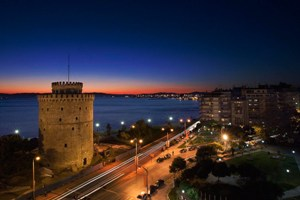

Welcome to the #Greek-Team Udacity Travelling Card Project

Travelling Card Project
This is an open source project made by students of Google Udacity Developer Challenge: Web Developer Path. The idea was conceived by students from the #greek slack channel. The purpose of this project is to further develop our skills by contributing to this project ;P.
Click on a marker on the map to expand the Information Card!
You can contribute to this Open Source project on GitHub
- Kavala-
Kavala is amphitheatrically built on the slopes of Mt. Symvolo, making it one of the most beautiful cities in Greece. Its location near Egnatia and its port gives Kavala its strategic and economic importance."
- Population : 70,501
- Area: 112.6 km2
- Administrative region: East Macedonia and Thrace
- Festivals: Cosmopolis, Ilios ke Petra (Sun and Stone)(July), Kavala AirSea Show, Wood Water Wild Festival.
"Its oldest neighborhood is Panagia, which has been uninterruptedly inhabited since the 7th century BC.The most important sights are the Castle, the Acropolis, the Imaret and the old Lighthouse at the end of Theodorou Pavlidou str. It was named as'Mecca of tobacco' because from 1918 onwards operated in Kavala around 50 tobacco companies and there were about 160 tobacco warehouses. There is a tobacco museum nowadays. It is also known for its beautiful beaches"
- Trikala -

Trikala (Greek: Τρίκαλα) is a city in northwestern Thessaly, Greece. The region of Trikala has been inhabited since prehistoric times, with the first indications of permanent settlement been uncovered in the cave of Theopetra, and dating back to approx. 49,000 BC!
- Population : 81,355
- Area: 607.59 km2
- Administrative region: Thessaly
- Sights: Temble Asklepieion of Trikke, Byzantine Castle build by Justinian,Osman Shah Mosque designed by Mimar Sinan ,Old City of Trikala, Meteora, Lithaios river and the Central Bridge
The city of Trikala is built on the ancient city of Trikka or Trikke, which was founded around the 3rd millennium BC . The city straddles the Lithaios river,which is a tributary of Pineios and took its name from the nymph Trikke, daughter of Penaeus, or according to others, daughter of the river god Asopus. It was considered to be the birthplace and main residence of the healing god Asclepius and is mentioned in Homer's Iliad as having participated in the Trojan War.
Trikala region has a distinctive geology including Meteora, an UNESCO World Heritage Site, home to 24 ancient Orthodox Christian monasteries precariously perched on top of a complex network of sandstone boulders,the Forests of Pili,the Pindus mountain villages and the ski resorts of Pertouli.
Nowdays Trikala has the distinction of being the first “smart city” in Greece, integrating technology-powered solutions into the daily life of the municipality and delivering government services to citizens through e-governance
Amorgos


Amorgos (Greek: pronounced [amorɣos]) is the easternmost island of the Cyclades island group, and the nearest island to the neighboring Dodecanese island group in Greece. Since the end of the 4th millennium BC there have been traces of human presence in Amorgos. Amorgos is an ideal hiking destination. There are paths that start and / or end up in a settlement and offer the visitor breathtaking landscapes.
- Location: Cyclades, Aegean Sea
- Population: 1,973 (2011 census)
- Interesting site: Monastery of 11th century
- Popular Beach: Agia Anna
Amorgos

Amorgos features a lot of remnants of ancient civilizations. At the time of Archaic Greece, there were three independent city-states there. They are believed to have featured autonomous constitutions but the same currency. Amorgos is distinguished by the size and quality of the walls surrounding the city of Arkesini, by the ancient towers whose remains are scattered all over the island, by the ancient tombs, the stone tools, the inscriptions, the vases and by other antiquities.
The monastery of Panagia Hozoviotissa is situated on the cliff side, northeast of Chora. It was built early in the second millennium in order to protect an icon, dated back to 812, from intruders.
One of its most popular beaches is Agia Anna, situated close to the monastery and well-known for its crystal blue waters which are ideal for diving!
Corfu


Taking a walk inside the old town you will be amazed by the buildings which have a neoclassic influence. Then, let yourself be lost, wandering in the the famous alleyways of Campiello, with washing lines hanging above you!
Some of Corfu's trademarks are actually other islands! The well known tiny island Pontikonisi (translated as Mouse Island) is a tree-lined rock which only holds the Pantokrator's Monastery. Nowadays, the rock is a natural museum and every visit is forbidden in order to protect the natural environment. Next to it, the famous Vlacherna islet holds another monastery and is connected to the mainland by a narrow causeway.
One of its most popular beaches is Canal d'Amour in Sidari. The myth says that if you swim there you will find your soul mate!
Corfu


Corfu (Greek: Κέρκυρα, pronounced [Kérkyra]) is the second largest of the Ionian islands. Along with its small satellite islands, it forms the northwesternmost part of Greece. The history of the island is strongly bound with the greek history starting from Greek mythology. The island of Corfu is identified as the Country of Phaeacians in Homer's Odyssey, the place where Odysseus was found shipwrecked from Nausika, the daughter of King Alkinoos.
- Location: Ionian islands, Ionian Sea
- Population: 104,371 (2011 census)
- Interesting sites: Old town, Old & New Fortress, Museum of Asian Art, Achilleion, Mon Repos, Kanoni, Pontikonisi
- Popular Beaches: Palaiokastritsa, Canal d'Amour, Sidari, Dasia, Ipsos
Thessaloniki
The city was founded around 315 BC by the King Cassander of Macedon, on or near the site of the ancient town of Therma and 26 other local villages. He named it after his wife Thessalonike, a half-sister of Alexander the Great and princess of Macedon as daughter of Philip II. Under the kingdom of Macedon the city retained its own autonomy and parliament and evolved to become the most important city in Macedon.
- Name: Thessaloniki
- Population: 1,104,460
- Location: Nothern Greece, Macedonia
- Founded: 315BC
Thessaloniki, also familiarly known as Thessalonica or Salonica, is the second-largest city in Greece, with over 1 million inhabitants in its metropolitan area, and the capital of Macedonia, the administrative region of Central Macedonia and the Decentralized Administration of Macedonia and Thrace.
-Samothrace-
Samothrace is a beautiful island, located in the northern Aegean sea. Widely known for the sculpture Winged Victory of Samothrace, which is currently in Louvre Museum
- Population : 2,859
- Area: 178.0 km2
- Administrative region: East Macedonia and Thrace
- Worth visiting: The Sanctuary of the Great Gods, The Archaeological Museum, The three-aisled Early Christian basilica,
In ancient times the Kaviria mysteries was of great importance. Palaiopoli is the main archaeological site, 6,5 km outside Kamariotissa,the island's port. The natural beauty of Samothrace is also worth mentioning. Many streams(the main is the river Fonias which means murderer) flow from mount Saos through the forest all the way to the sea, forming on their way waterfalls and stone basins, also called as "vathres". The wild scenery continues throughout the whole island. The beaches are pebbled with crystal waters.